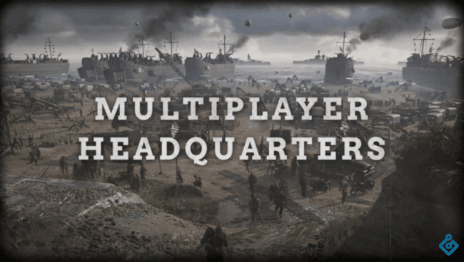

Sandbox é um estilo de game em que são colocadas apenas limitações mínimas para o personagem. Com isso, o jogador pode vagar e modificar completamente o mundo virtual de acordo com a sua vontade. Ao contrário dos jogos de progressão, um sandbox enfatiza a exploração e permite selecionar as tarefas que serão realizadas.
